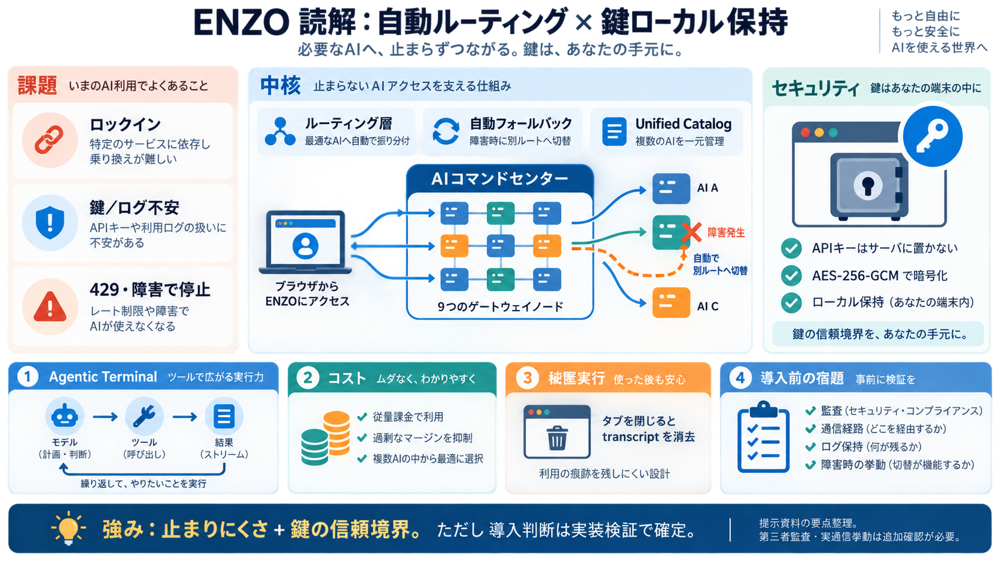

Kong AI Gateway vs OpenRouter (2026) | Respan
Pros Developer-friendly platform Production-ready Good performance Active development Cons Enterprise pricing va…

ENZOは、複数のAI提供元を9つのゲートウェイとして束ね、同一コンソールで「最適なモデルへ自動切替」するAIコマンドセンターです。
さらに、APIキーをサーバに置かず利用者側（ブラウザ）に閉じ込める設計を強調します。
従来のAI利用は、特定のクラウド／API事業者への依存、APIキーやログの取り扱い不安、障害やレート制限で停止しやすいことが課題でした。ENZOは、そのリスクを「ルーティング層」と「鍵の信頼境界」で抑える方針です。
単一事業者に固定されがち
キーやログの保管不安
障害・429レートで止まる
ENZOは9つのゲートウェイを用意し、障害やレート制限時に「次の利用可能ルートへ切り替え」て継続する設計を強調します。
単なるモデル一覧ではなく、止まりにくさ（運用継続性）を狙う点が要点です。
Unified Catalogでモデル/条件を選ぶ
429や失敗でも別ゲートウェイへ自動切替
資料では、APIキーをサーバに保持せず、ブラウザ側で管理すると説明されています。AES-256-GCMで暗号化し、JavaScriptからエクスポートできないキー管理としている点を挙げています。
サーバ保持ゼロ / ブラウザ保持
AES-256-GCM / エクスポート不可の管理
ENZOは、モデルがツール呼び出しを判断し、バックエンドが実行し、結果をトランスクリプトへストリーム表示する構造を強調します。これにより検索体験を超え、業務自動化の精度・再現性・（監査可能な形での）制御に影響します。
思考 / 調査 / コーディング / 画像
Web検索 / メール / カレンダー / ドキュメント
結果をトランスクリプトにストリーミング
ENZOは9つのゲートウェイを束ね、Unified Catalogでモデルを選び、端末側（Agentic Terminal）で実行し、SSEでリアルタイム表示する流れを示します。
提供状況と価格を定期更新し、選択ミスによる失敗を減らす設計です。
Groq / OpenRouter / NVIDIA NIM / Hugging Face / Google AI / Cloudflare Workers AI…等
SSEストリーミング / 6時間ごとのカタログ再同期
資料では「プロバイダ料金に準拠し、オーバーチャージを抑える」姿勢が述べられています。さらに、オーバージトークンはプロバイダリスト価格で課金し、キャンセル可能と説明しています。
オーバージトークンはプロバイダリスト価格
キャンセル可能 / 入力価格をキャッシュ（記述あり）
プロバイダが途中で失敗したり、429レート制限やストリーム不正が起きても、自動フォールバックにより継続して返す方針が強調されています。
ただし“完全な連続性保証”か“途切れにくい”程度かは仕様確認が安全です。
429レート制限 / 失敗 / ストリーム不正
ゲートウェイ切替（フォールバック）
SSEで途切れにくくストリーム表示
資料ではENZOを「wrapper margin（中間マージン）」的な共有推論レイヤーとは異なると述べています。ローカルからプロバイダへ直接ルーティングし、自前のExpressバックエンドでプロキシすることで、鍵や推論を第三者に丸投げする構造を避けたい、という主張です。
鍵や推論を“第三者へ丸投げ”
ローカルから直接ルーティング + プロキシ
資料では「incognito runs（秘匿実行）」として、セッションストアに書き込まず、タブを閉じればトランスクリプトが消える動きを示しています。
ただしブラウザキャッシュやOSレベルログなど周辺要因は追加確認が必要です。
セッションストアへ書き込みしない（記述）
タブを閉じるとトランスクリプトが消える
ENZOは価値が大きい一方、提示資料だけでは第三者監査、脆弱性対応、暗号化運用、障害時のデータ保持・復元の挙動、ゲートウェイ間のセキュリティ差異が十分に示されていません。
導入前に、セキュリティ文書と実地テストをセットで行うべきです。
脅威モデル/監査/ペネトレーション/通信経路
429・ツール失敗・ストリーム中断の挙動
ログ保持/例外時の保存/復元と削除
以下は、今回のスライドで扱った主な記述の出どころ（章・観点）です。導入判断では、同名機能でも仕様差があり得るため公式ドキュメントと実通信確認を推奨します。
Summary / Points(1)(自動フォールバック)
Summary / Points(2)(AES-256-GCM、0保持)
Summary / Points(4)(6時間再同期) / SSE記述
Points(3)(Agentic Terminal、ツール呼び出しループ)
FAQ(Q2,Q3,Q5) + My opinion（監査/検証不足の指摘）
Pros Developer-friendly platform Production-ready Good performance Active development Cons Enterprise pricing va…
Pros Developer-friendly platform Production-ready Good performance Active development Cons Enterprise pricing va…
OpenRouter's current BYOK documentation needs a pricing clarification before I would put a large forecast behind it. The…
A unified AI API gateway gives one access layer for multiple model providers. It usually handles model routing, fallback…
| 2nd | Logo for Ambience Ambience 2020, San Francisco (United States), Series C | Provider of AI-based medical scribe…